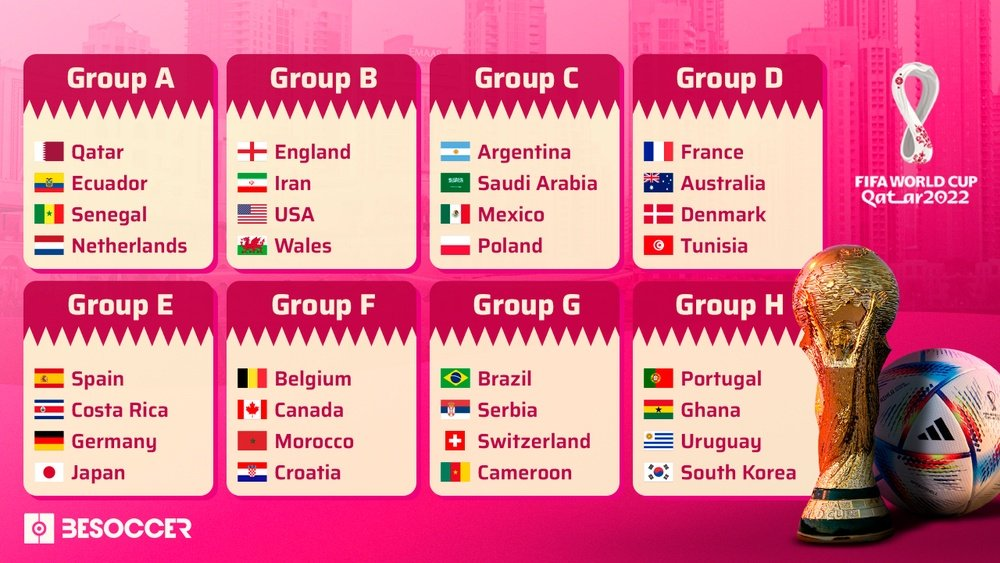
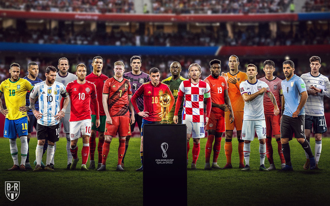

A Copa do Mundo é um dos maiores eventos esportivos do planeta e a cada
quatro em quatro anos, bilhões de pessoas assistem aos jogos realizados.
A primeira Copa do Mundo aconteceu em 1930, após muitos anos de
tentativas de se organizar uma competição mundial de futebol, desde
então, é um evento mágico que encanta gerações, une nações e povos ao
redor do mundo .
Veja abaixo as seleções que irão participar e seus grupos

Os melhores jogadores juntos na Copa do Mundo
